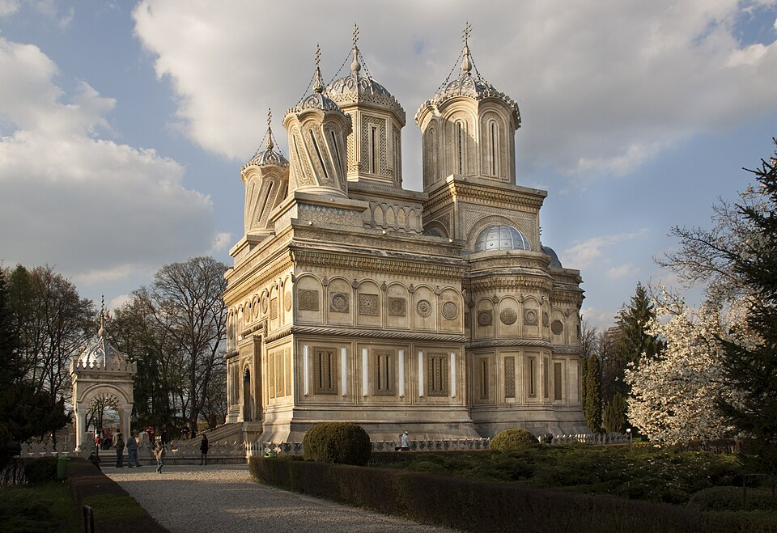
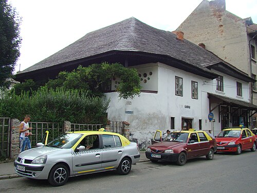

Istorie și cultură românească
Unul dintre cele mai vechi orașe din România, fostă capitală a Țării Românești.

Curtea de Argeș a fost prima capitală a Țării Românești în secolul al XIV-lea.
Mănăstirea Curtea de Argeș este una dintre cele mai cunoscute construcții din România, fiind legată de legenda Meșterului Manole.
Aici se află necropola regală unde sunt înmormântați regi ai României, precum Carol I și Ferdinand I.
Orașul este situat pe râul Argeș și este poarta de intrare spre Transfăgărășan.
Curtea de Argeș este un important centru cultural și religios încă din Evul Mediu.
Matematician și scriitor contemporan.
Loc istoric legat de familia Goangă.
